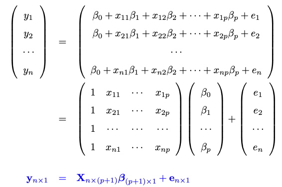
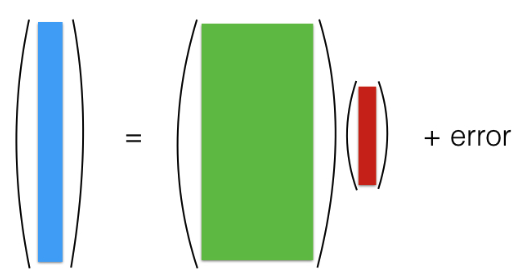
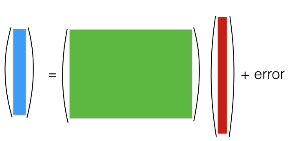
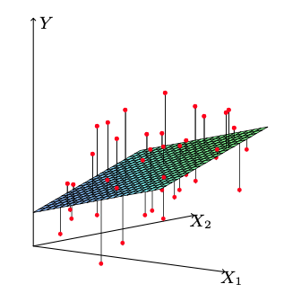
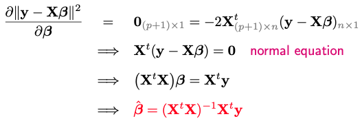
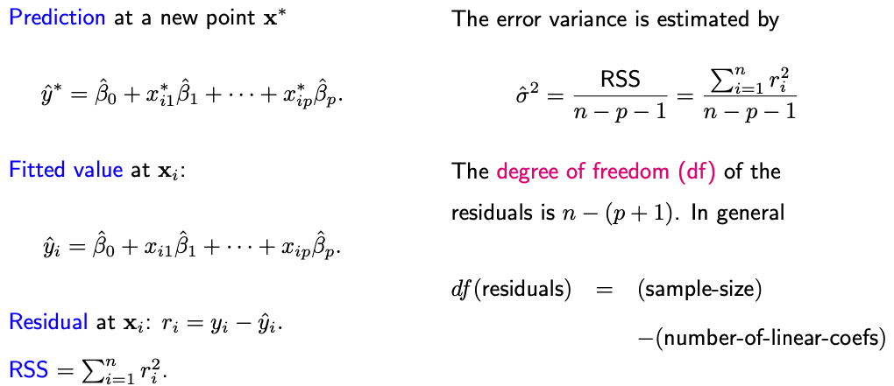
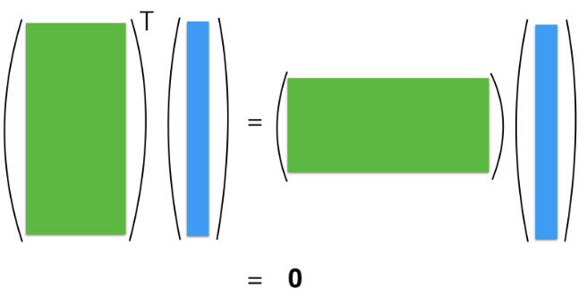

2.1. Multiple linear regression
Multivariate linear regression (MLR) models the relationship between several predictor variables and a response variable:
These models are simple in structure and are computationally efficient to estimate. The linearity assumption in MLR might be seen as a limitation, but many techniques used in MLR can be applied to nonlinear models as well. Understanding MLR is a fundamental part of statistical learningessential because it lays the groundwork for more complex models.
2.1.1. Setup
Linear regression can be expressed compactly using matrices:
{kind=link}
where
y is an n-by-1 vector of observed outputs.
X is the design matrix with n rows (samples) and an (p+1) columns (features + intercept).
\(\beta\) is a (p+1)-by-1 vector regression coefficients.
e is an n-by-1 vector or errors.
You can picture this matrix representation as follows:
{kind=link}
The picture above represents the classical setting where we have many samples but a few features (large n small p). The design matrix X is “tall and skinny.” In this situation, the matrix (X^t X) is is typically invertible, which allows for unique solutions for \(\beta\) and statistical properties of such solutions are well-understood.
Next week, we’ll encounter regression models like this:
{kind=link}
This is a scenario frequently encountered in modern datasets where the number of features surpasses the number of samples (large p small n). The design matrix X is “short and fat.” A consequence of this setup is that (X^t X) no longer invertible, leading to an infinitely array of solutions for \(\beta\). This is a challenging situation and can lead to overfitting, as it becomes easy to find a \(\beta\) that fits the training data perfectly but performs poorly on unseen data.
We’re going to discuss how to deal with this “large p small n” setting next week. For now, let’s focus on the “large n small p” setting with a tall and skinny design matrix X.
2.1.2. LS Principle
The least square method is a standard technique for estimating parameters in regression models. It is used to obtain the least square estimates of the beta coefficients by minimizing a quantity known as the residual sum of squares, or RSS for short.
{kind=link}
So, what exactly is RSS? Let’s consider a case where we have two predictors. In this context, each sample can be represented by a triplet, corresponding to one of the red dots in our graphical representation.
A linear function can then be described as: \(y = \beta_0 + \beta_1 x_1 + \beta_2 x_2\). This equation represents a plane in our graph. Now, the difference between the observed value y_i and the predicted value from our linear model corresponds to one of those black vertical bars in our graphical representation.
Our goal is to find the beta values—or in other words, a plane—such that these red dots (observed values) are as close as possible to the plane. Ideally, we want those black bars (residuals) to be short. The RSS is defined as the sum of the squared lengths of these black bars, which is the objective function we aim to minimize.
We could theoretically use other objective functions. For instance, we could drop the square and use the absolute value, which would still be a reasonable way to measure the closeness between the red dots and the plane. However, minimizing the RSS has become the standard approach, largely due to its appealing mathematical properties, computational efficiency, and the fact that its solution is in closed form.
2.1.3. LS Estimate
In matrix form, RSS can be expressed as follows:
The residual vector \(\mathbf{r} = \mathbf{y} - \mathbf{X} \boldsymbol{\beta}\) is n-by-1, each element corresponding to the residual for each observation. The Residual Sum of Squares (RSS) is the squared norm of this residual vector.
To minimize the RSS, we take its derivative with respect to \(\boldsymbol{\beta}\) and set it to zero. Remember, this is a shorthand for taking the derivative concerning each element of \(\boldsymbol{\beta}\), resulting in a vector of zeros of length (p+1).
{kind=link}
It’s crucial to note that this solution assumes X has full rank, meaning the inverse of X^t X exists. What if X doesn’t have full rank? We’ll discuss this later; it’s not a serious issue.
In statistics, placing a hat on a symbol indicates it’s an estimate. Thus, \(\hat{\boldsymbol{\beta}}\), is an estimate of the true coefficient vector based on a collection of n samples.
2.1.4. LS Output
Once we’ve derived the least square estimate, various other least squares outputs can be obtained.
{kind=link}
This RSS can be employed to estimate the error variance, sigma-square. Notably, sigma-quare is generally estimated by the ratio of RSS and n-p-1, rather than simply dividing by n. The rationale for using n-p-1 as the denominator is that the degree of freedom of the n residuals is n-p-1.
But why is this the case?
To grasp this, let’s return to our normal equation utilized to derive beta-hat. It implies that \(\mathbf{X}^t \mathbf{r} = \mathbf{0}_{(p+1) \times 1}\); visulize this equation below.
{kind=link}
This equation indicates that the inner product between r and all p+1 columns of X is zero.
What do these constraints entail?
For instance. the first column of X consists solely of ones, leading to the constraint \(\mathbf{1}^t \mathbf{r} = \sum_i r_i = 0\). This emphasizes that the mean residual for any regression model with an intercept is always zero.
Other constraints can be derived by assessing the inner product between r and other X columns. Due to these p+1 constraints, the residuals vector, despite having n elements, undergoes a reduction of p+1 degrees of freedom.